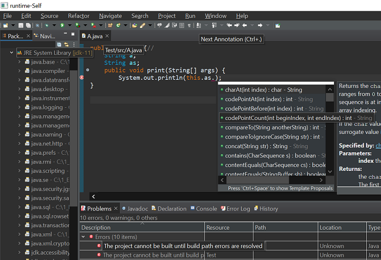

Here are descriptions of some of the changes of interest to plug-in developers made to the Eclipse Platform and SWT for the 4.21 release of Eclipse.
New features oriented towards end-users of the platform can be viewed in the What's New section of the Workbench User Guide.
Platform Changes |
|
| Path to bundlepool expressed using @launcher.dir | When creating a bundlepool installation of eclipse, the location of the bundlepool is expressed using the @launcher.dir varliable. The launcher, typically eclipse.exe, will replace the string "@launcher.dir" with the location where the launcher is located on disk at startup. This delayed resolution of the bundlepool location allows the bundled pool and the eclipse installations to be relocated in the file system as long as the internal relationship stays the same. Previously, the path to the bundlepool (expressed using the "-install" launcher option) was always an absolute path and produced when the installation took place. |
SWT Changes |
|
| StyledText API to use multiple carets or selection ranges |
StyledText widget now has a new setSelectionRanges(int[] ranges) API which allows to pass
an arbitraty number of selection ranges. When multiple ranges are used, the text widget will display them
as distinct carets and selection ranges and will allow simultaneous edits at those locations.
|
| SWT Windows now supports dark-theme tool-tips | Table, Tree, CTabFolder, ToolBar and MenuItem widgets now support dark-theme tool-tips. Refer below screen-shots which show combined tool-tips for various widgets.  |
p2 Changes |
|
| Trust signers of PGP-signed artifacts |
When artifacts to be installed have the pgp.signatures property set, additionally to the integrity check that
are responsible of verifying the signatures are valid for the given artifact, the public key of the signers will now be
prompted to user in the same Trust dialog as unknown certificates, and user will have to declare the signer
key as trusted for installation to complete. All PGP-signed artifacts need to have at least 1 trusted signer for installation
to complete; an artifact that has no trusted signer will block the installation.
The behavior is similar to what's already in place for artifacts signed with jarsigner. However, some convenience behavior such as remembering what was already trusted is not implemented yet. For extenders or users of p2's API, beware that |
Equinox Changes |
|
| Splash screen image format | Launcher splash screen image can be in any of the following formats: PNG, JPG, GIF and BMP. Transparency and animation are not supported yet. |